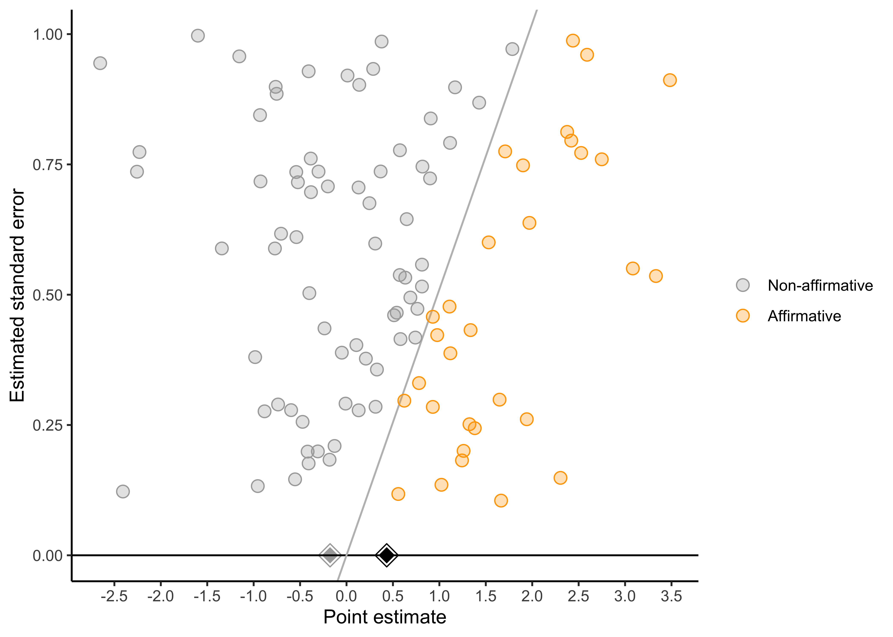
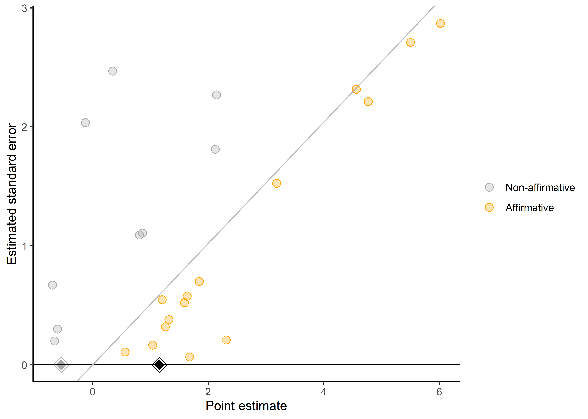

Chapter 17 Meta-analysis
🍎 Learning goals:
- Understand the benefits of synthesizing evidence across studies.
- Understand the pitfalls of intuitive approaches to evidence synthesis, with a focus on how many of these issues are addressed via meta-analysis.
- Conduct a simple fixed- or random-effects meta analysis.
- Understand that within- and across-study biases affect not only individual studies, but also meta-analysis.
🔬 Case study: Hotel towel reuse (Scheibehenne, Jamil, and Wagenmakers 2016). A simple example of aggregating noisy evidence from replications.
In a widely-cited study on the power of describing social norms, Goldstein et al. (2008) examined the effect of social norm messaging on hotel towel reuse. Across two studies, they found that guests were significantly more likely to reuse their towels after receiving a social norm message that stated most other people reuse their towels (Study 1 \(p = .05\), Study 2 \(p = .03\)). However, five subsequent studies consistently failed to indicate that social norm messages increased hotel towel reuse (all \(p > .05\)).
At first glance, you might conclude that these studies indicate that social norm messages do not reliably impact towel reuse. You might even go a step further and try to think of explanations for why one team found the effect, but others did not. (Maybe the messages change behavior when guest receive nice fluffy towels, but not when they receive cheap, low-quality towels.) However, this is a case where binary thinking about \(p\)-values can mislead us. When Scheibehenne et al. (2016) combined the evidence via a meta-analysis, they found that the results across these studies were, for the most part, quite consistent. Participants who received a social norm message were slightly more likely to reuse their towels in four out of five of the studies–but most of the studies simply did not have large enough samples for this difference to be statistically significant. When combined, however, meta-analysis indicated that social norm messages did have a significant overall effect on hotel towel reuse.
When students hear the term “review,” they often have flashbacks to times where they threw some search term into Google Scholar, downloaded a bunch of articles that looked interesting, spent a few days reading those articles, and then wrote a summary of what they learned. This is one of many ways of performing a review (see Grant & Booth (2009)), but this chapter focuses on a specific type of quantitative review called meta-analysis.
One of the central parts of the meta-analysis is extracting effect sizes from individual studies and then combining these effect sizes. (Feel free to check back to Chapter 4 if you need a refresher on effect sizes. We’ll wait here for you, we promise.) By combining information from multiple studies, meta-analysis often provides more precise estimates of an effect size than any single study. In addition, meta-analysis also allows the researcher to look at the extent to which an effect varies across studies. If an effect does vary across studies, meta-analysis can be used to test whether certain study characteristics systematically produce different results (e.g., whether an effect is larger in certain world regions).
Meta-analysis often teaches us something about a body of evidence that we do not intuitively grasp when we casually read through a bunch of articles. Indeed, in the above case study, merely reading all the studies that tested the effect of social norm messaging on hotel towel re-use would give the impression that the effect is (at best) unreliable. However, meta-analysis indicated that the results across studies are not as inconsistent as they seem–and that social norm messaging did decrease towel re-use overall. Given the number of hotel bookings worldwide–1.7 billion in the European Union alone in 2013 Kotzeva et al. (2015)–the unique insight provided by the meta-analysis is not at all trivial!
The hotel towel example is a good starting point but there is much more we can do with meta-analysis. To illustrate, we’ll turn to another example: a meta-analysis of an idea called the contact hypothesis. According to contact hypothesis, prejudice can be reduced when members of majority and minority groups come together in the pursuit of a common goal Allport (1954). To examine whether this type of intergroup contact can mitigate prejudice in the real world, Paluck et al. (2019) performed a meta-analysis of studies that tested the effects of randomly-assigned intergroup contact interventions on prejudice-related outcomes. Cohen’s \(d\)–which, if you recall from Chapter 4, represents the standardized mean difference–was used as the effect size index. As we show in the remainder of the chapter, the meta-analytic tools Paluck et al. (2019) used provide several useful insights about this proposed prejudice-reduction intervention.
17.1 The basics of evidence synthesis
17.1.1 How not to synthesize evidence
When considering evidence across multiple studies, many people intuitively count how many studies supported versus did not support the hypothesis under investigation. This usually amounts to counting the number of studies with “significant” \(p\)-values, since (for better or for worse) “significance” is largely what drives the take-home conclusions researchers report (McShane & Gal, 2017; Nelson et al., 1986). In meta-analysis, we call this practice of counting the number of significant \(p\)-values vote-counting (Borenstein et al., 2021). For example, in the Paluck et al. (2019) meta-analysis, all studies yielded positive effect sizes, but only approximately 12 of 27 were significant. So, based on this vote-count, we would have the impression that most studies do not support the contact hypothesis.
Many literature reviews use this vote-counting approach–albeit often not explicitly. Despite its intuitive appeal, though, vote-counting can be very misleading because it characterizes evidence solely in terms of dichotomized \(p\)-values, while entirely ignoring effect sizes. In Chapter 2, we saw how this fetishism of statistical significance can mislead us when we consider individual studies. These problems propagate to evidence syntheses if we simply vote-count statistical significance across studies as well. For example, small studies on large effects may consistently produce non-significant effects that, when combined in a large meta-analysis, provide strong evidence of an effect. Inversely, it is also possible for a meta-analysis to not provide strong evidence of an effect despite several studies finding statistically significant effect size estimates. In these cases, vote-counting could lead us badly astray (Borenstein et al., 2021). To avoid these pitfalls, meta-analysis combines the effect sizes estimates from each study.
17.1.2 Combining results across studies using fixed-effect meta-analysis
Once you are ready to combine results across studies, you have to figure out how you will do so. A seemingly reasonable approach would be to simply average the effect size estimates from each study. For example, in Paluck et al.’s meta-analysis, the mean of the studies’ effect size estimates is 0.44. This approach is a step in the right direction, but it has an important limitation. Specifically, simply averaging effect size estimates gives equal weight to each study. A small study (like Clunies-Ross & O’meara (1989), with a sample size of 1243) contributes as much to the mean effect size as a large study (like Boisjoly et al. (2006), with a sample size of 30). This is problematic–as we know that larger studies typically provide more accurate estimates of effect sizes. Thus, larger studies should carry more weight in the analysis. This brings us to a common approach to principled evidence synthesis, fixed-effect meta-analysis.
As we’ve seen throughout this book, visualizing data before and after analysis helps benchmark and sanity-check our intuitions about the formal statistical results. In a meta-analysis, a common way to do so is the forest plot, which depicts individual studies’ estimates and confidence intervals. (You can ignore for now the column of percentages and the final line, “RE Model”; we will return to these later.) In this plot, the larger squares correspond to more precise studies; notice how much narrower their confidence intervals are than the confidence intervals of less precise studies.
Figure 17.1: Forest plot for Paluck et al. meta-analysis. Studies are ordered from smallest to largest standard error.

Fixed-effect meta-analysis uses a weighted-average, wherein larger, more precise studies are given more weight in the calculation of the overall effect size. Specifically, studies are weighed by the inverse of their variance (i.e., the inverse of their squared standard error). This makes sense because larger, more precise studies have smaller variances, and thus get more weight in the analysis. The fixed-effect pooled estimate is:
\[\widehat{\mu} = \frac{ \sum_{i=1}^k w_i \widehat{\theta}_i}{\sum_{i=1}^k w_i}\] where \(k\) is the number of studies, \(\widehat{\theta}_i\) is the point estimate of the \(i^{th}\) study, and \(w_i = 1/\widehat{\sigma}^2_i\) is study \(i\)’s weight in the analysis (i.e., the inverse of its variance).1 If you are curious, the standard error of the fixed-effect \(\widehat{\mu}\) is \(\frac{1}{\sum_{i=1}^k w_i}\). This can be used to construct a confidence interval or \(p\)-value.
In Paluck et al.’s meta-analysis, we would calculate the fixed-effect estimate, \(\widehat{\mu}\), as:
\[\widehat{\mu} = \frac{ \frac{\widehat{\theta}_{study1}}{\widehat{\sigma}^2_{study1}} + \frac{\widehat{\theta}_{study2}}{\widehat{\sigma}^2_{study2}} + \cdots}{ \frac{1}{\widehat{\sigma}^2_{study1}} + \frac{1}{\widehat{\sigma}^2_{study2}} + \cdots } = \frac{ \frac{0.03}{0.08^2} + \frac{0.30}{0.08^2} + \cdots }{ \frac{1}{0.08^2} + \frac{1}{0.08^2} + \cdots }\]
We thus estimate that the overall effect size in these studies is a standardized mean difference of \(\widehat{\mu}\) = 0.28; 95% confidence interval [0.23, 0.34]; \(p=\) < .001. Because cohen’s \(d\) is our effect size index, this means that intergroup contact decreased prejudice by 0.28 standard deviations.
17.1.3 Limitations of fixed-effects meta-analysis
One of the limitations of fixed-effect meta-analysis is that it assumes that the true effect size is, well, fixed across studies. In other words, fixed-effect meta-analysis assumes that there is a single effect size that all studies are estimating. This is a bold assumption. For example, imagine that intergroup contact (a) decreases prejudice when the groups succeed at their goal, but (b) increases prejudice when the groups fail at their goal. If we combined one study that had intergroups fail at their goal with another study that had intergroups succeed at their goal, it would appear that the true effect of intergroup contact is zero. However, is it reasonable to assume that these studies are examining the same fixed effect? Is it perhaps more useful to think of the multiple effects of intergroup contact (e.g., one effect for intergroup success and one effect for intergroup failure?)
In Paluck et al.’s meta-analysis, studies differed in several ways that could lead to different true effects. For example, some studies recruited adult participants while others recruited children. If we assume that intergroup contact works different for adults vs. children, then it is misleading to talk about a single intergroup contact effect. Instead, we would say that the effects of intergroup contact varies across studies: an idea called heterogeneity.
Does this presence of heterogeneity remind you of anything from when we analyzed repeated-measures data in Chapter 6 on models? Recall that, with repeated-measures data, we had dealt with the possibility of heterogeneity across participants by introducing participant-level random intercepts to our regression model. Turns out that we can do a similar thing in meta-analysis!
17.1.4 Random-effects meta-analysis
Whereas fixed-effect meta-analysis essentially assumes that all studies in the meta-analysis have the same population effect size, \(\mu\), random-effects meta-analysis instead postulates that studies’ population effects come from a normal distribution with mean \(\mu\) and standard deviation \(\tau\).2 Technically, other specifications of random-effects meta-analysis are possible. For example, robust variance estimation does not require making assumptions about the distribution of effects across studies (Hedges et al., 2010). These approaches also have other substantial advantages, like their ability to handle effects that are clustered (e.g., because some papers contribute multiple estimates; (Hedges et al., 2010); (Pustejovsky & Tipton, 2021)) and their ability to provide better inference in meta-analyses with relatively few studies (Tipton, 2015). For these reasons, we tend to use these methods by default when conducting meta-analyses. The larger the standard deviation, \(\tau\), the more heterogeneous the effects are across studies. A random-effects model then estimates both \(\mu\) and \(\tau\), for example by maximum likelihood (DerSimonian & Laird (1986); Brockwell & Gordon (2001)).3 A confidence interval and \(p\)-value for the random-effects estimate \(\widehat{\mu}\) can be obtained using standard theory for maximum likelihood estimates with an additional adjustment that helps account for uncertainty in estimating \(\tau\) (Knapp & Hartung, 2003).
Like fixed-effect meta-analysis, the random-effects estimate of \(\widehat{\mu}\) is still a weighted average of studies’ effect size estimates: \[\widehat{\mu} = \frac{ \sum_{i=1}^k w_i \widehat{\theta}_i}{\sum_{i=1}^k w_i}\]
However, in random-effects meta-analysis, the inverse-variance weights now incorporate heterogeneity: \(w_i = 1/\left(\widehat{\tau}^2 + \widehat{\sigma}^2_i \right)\). These weights represent the inverse of studies’ marginal variances, comprising not only statistical error due to their finite sample sizes (\(\widehat{\sigma}^2_i\)) but also genuine effect heterogeneity (\(\widehat{\tau}^2\)).4 The estimate of \(\widehat{\tau}^2\) is a bit more complicated, but is essentially a weighted average of studies’ residuals, \(\widehat{\theta_i} - \widehat{\mu}\), while subtracting away variation due to statistical error, \(\widehat{\sigma}^2_i\) (Brockwell & Gordon, 2001; DerSimonian & Laird, 1986).
17.1.5 Reporting on heterogeneity
Remember that in random-effects meta-analysis, the estimate \(\widehat{\mu}\) represents only the mean population effect across studies. It tells us nothing about how much the effects vary across studies. Thus, we recommend always reporting the heterogeneity estimate \(\widehat{\tau}\), perhaps supplemented by other related metrics (Riley et al. (2011); Wang & Lee (2019); Mathur & VanderWeele (2019); Mathur & VanderWeele (2020a)). Reporting the heterogeneity indicates how consistent or inconsistent the effects are across studies, which may point to the need to investigate moderators of the effect (i.e., factors that can cause a shift in the size of the effect, such as the type of intergroup contact intervention).5 One common approach to investigating moderators in meta-analysis is meta-regression, in which moderators (e.g., type of intergroup contact) are included as covariates in a random-effects meta-analysis model (Thompson & Higgins, 2002). As in standard regression, coefficients can then be estimated for each moderator, representing the mean difference in population effect between studies with versus without the moderator.
17.1.6 Applied example
Conducting a random-effects meta-analysis of Paluck et al.’s dataset yields \(\widehat{\mu}\) = 0.4 ; 95% confidence interval [ 0.2, 0.61 ]; \(p=\) < .001. That is, they estimated that, on average across studies, intergroup contact was associated with a decrease in prejudice of 0.4 standard deviations. However, these effects appeared to differ considerably across studies; they estimated that the standard deviation of effects across studies was \(\widehat{\tau}\) = 0.44 ; 95% confidence interval [0.25, 0.57]. To conveniently visualize these results, we can plot the estimated density of the population effects, which is just a normal distribution with mean \(\widehat{\mu}\) and standard deviation \(\widehat{\tau}\).
 Figure 17.2: Estimated distribution of population effects from random-effects meta-analysis of Paluck et. al’s dataset (heavy red curve) and estimated density of studies’ point estimates (thin black curve).
Figure 17.2: Estimated distribution of population effects from random-effects meta-analysis of Paluck et. al’s dataset (heavy red curve) and estimated density of studies’ point estimates (thin black curve).
17.2 Bias in meta-analysis
Meta-analysis is an invaluable tool to synthesize evidence across studies. However, meta-analyses can be compromised by two categories of bias: within-study biases and across-study biases. Either type of bias can lead to meta-analysis estimates that are too large, too small, or in the wrong direction. We will now discuss examples of each type of bias. We will also discuss ways to address these biases when conducting a meta-analysis, including mitigating the biases at the outset through sound meta-analysis design and also assessing the robustness of the ultimate conclusions to possible remaining bias.
17.2.1 Within-study biases
Within-study biases–such as demand characteristics, confounds, and order effects–not only impact the validity of individual studies, but also any attempt to synthesize those studies. In other words: garbage in, garbage out. For example, Paluck et al. (2019) noted that early studies on intergroup contact almost exclusively used nonrandomized designs. Imagine a hypothetical study where researchers (a) are studying a completely ineffective intergroup contact intervention, and (b) non-randomly assign low-prejudice people to the intergroup contact condition and high-prejudice people to the control condition. In a scenario like this, the researcher will, of course, find that the prejudice was lower in the intergroup contact condition. However, this is not a true effect of the contact intervention, but rather a spurious effect of non-random assignment. Now imagine repeating this across many studies and then performing a meta-analysis. The meta-analyst would find impressive evidence of an intergroup contact effect, but this is simply driven by systematic non-random assignment. Once again: you put garbage in, you get garbage out.
To mitigate this problem, meta-analysts often exclude studies that may be affected by within-study bias. For example, Paluck et al. (2019) excluded nonrandomized studies to avoid concerns about confounding. After data have been collected, meta-analysts often also qualitatively assess studies’ risks of bias using established rating tools (Mathur & VanderWeele, 2022). Doing so allows the meta-analyst to communicate just how much within-study bias there may be. Paluck et al. (2019) did not use this tool, but they could have used it to communicate for example, the extent to which participants may have differentially dropped out of the study. Meta-analysts also often conduct sensitivity analyses that examine how much meta-analysis results change when excluding certain types of studies (Mathur & VanderWeele, 2022). For example, if nonrandom assignment is a concern, a meta-analysts may run the analyses with and without studies using nonrandom assignment in order to determine if including these studies changes the meta-analysis results.
17.2.2 Across-study biases
Across-study biases refer to behaviors like researchers selecting reporting certain types of findings (selective reporting) or selectively publishing certain types of findings (publication bias; see below accident report). Often, these across-study biases favor statistically significant positive results, which means the meta-analysis of the available results will be inflated. For example, if researchers publish only the studies that yield statistically significant positive results and hide the studies that don’t, statistically combining the published studies via meta-analysis will obviously lead to exaggerated effect size estimates. Bias in, bias out–garbage in, garbage out.
🔬 Accident Report: Quantifying publication bias in the social sciences
In 2014, Franco et al. (2014) and colleagues examined the population of 221 studies conducted through a funding initiative that helps researchers run experiments on nationally-representative samples in the U.S. First, Franco and colleagues examined the records of these studies to determine whether the researchers found statistically significant results, a mixture of statistically significant and nonsignificant results, or only nonsignificant results. Then, Franco and colleagues examined the likelihood that these results were published in the scientific literature.
What results do you think were most likely to be published? If you guessed “significant results” you have a good intuition about publication bias. Over 60% of studies with statistically significant results were published, compared to the mere 25% of studies that produced only statistically non-significant results.
Like within-study biases, meta-analysts often try to mitigate across-study biases by being careful about what studies make it into the meta-analysis. Meta-analysts don’t only want to capture high-profile, published studies on their effect of interest, but also studies published in low-profile journals and the so-called “gray literature” (i.e., unpublished dissertations and theses; Lefebvre et al. (2019)].6 Evidence is mixed regarding whether including gray literature actually reduces across-study biases in meta-analysis (Mathur & VanderWeele, 2021; Tsuji et al., 2020), but it is still common practice to try to oinclude this literature.
There are also statistical methods to help assess how robust the results may be to across-study biases. Among the most popular tools to assess and correct for publication bias is the funnel plot (Duval & Tweedie, 2000; Egger et al., 1997), a graph relating the meta-analyzed studies’ point estimates to some measure of their precision, such as sample size or standard error. Here is an example of a type of funnel plot (Mathur & VanderWeele, 2020b) for a simulated meta-analysis of 100 studies with no publication bias:
Figure 17.3: Significance funnel plot for a meta-analysis simulated to have no publication bias. Orange points: studies with \(p<0.05\) and positive estimates. Grey points: studies with \(p ge 0.05\) or negative estimates. Black diamond: random-effects estimate of \(Mhat\) within all studies.

Figure 17.4: Significance funnel plot for a meta-analysis simulated to have no publication bias. Orange points: studies with \(p<0.05\) and positive estimates. Grey points: studies with \(p ge 0.05\) or negative estimates. Black diamond: random-effects estimate of \(Mhat\) within all studies.
Notice that larger studies (those with smaller standard errors) cluster more closely around the mean of 0.34 than do smaller studies, but large and small studies alikehave point estimates centered around the mean. That is, the funnel plot is symmetric. In contrast, a funnel plot might look asymmetric. Here is what happens to our hypothetical meta-analysis if all studies with \(p<0.05\) and positive estimates are published, but only 10% of studies with \(p \ge 0.05\) or with negative estimates are published:
Figure 17.5: Significance funnel plot for the same simulated meta-analysis after publication bias has occurred. Orange points: studies with \(p<0.05\) and positive estimates. Grey points: studies with \(p ge 0.05\) or negative estimates. Black diamond: random-effects estimate of \(Mhat\) within all studies.

Figure 17.6: Significance funnel plot for the same simulated meta-analysis after publication bias has occurred. Orange points: studies with \(p<0.05\) and positive estimates. Grey points: studies with \(p ge 0.05\) or negative estimates. Black diamond: random-effects estimate of \(Mhat\) within all studies.
Notice that the introduction of publication has dramatically inflated the pooled estimate from 0.34 to 1.15.[^8] Also, there appears to be a correlation between studies’ estimates and their standard errors, such that smaller studies tend to have larger estimates than do larger studies. This is often called funnel plot asymmetry.
Several popular statistical methods, such as Trim-and-Fill (Duval & Tweedie, 2000) and Egger’s regression (Egger et al., 1997) are designed to quantify funnel plot asymmetry. However, one limitation is that funnel plot asymmetry is not always representative of publication bias. Indeed, sometimes funnel plot asymmetry is driven by genuine differences in the effects being studied in small and large studies (Egger et al., 1997; Lau et al., 2006). For example, in a meta-analysis of intervention studies, if the most effective interventions are also the most expensive or difficult to implement, these highly effective interventions might be used primarily in the smallest studies. Thus, funnel plot methods may be indicative of publication bias–but they may more simply driven by small-study effects (Maier et al., 2021).7 Essentially, funnel plots and most related methods can detect publication bias in which (1) small studies with large positive point estimates are more likely to be published than small studies with small or negative point estimates; and (2) the largest studies are published regardless of the magnitude of their point estimates. Funnel plots may not detect publication bias that favors significant results. For more detail on these points, see Maier et al. (2021). For these reasons, assessments of publication bias in meta-analysis should rely not only on funnel plots (Maier et al., 2021). There are numerous other methods that can be applied as well, such as selection models.8 High-level overviews of selection models are given in McShane et al. (2016) and Maier et al. (2021). For more methodological detail, see Hedges (1984), Iyengar & Greenhouse (1988), and Vevea & Hedges (1995). For a tutorial on fitting and interpreting selection models, see Maier et al. (2021). These models can detect other forms of publication bias that funnel plots may not detect, such as publication bias that favors significant results.
You may also have heard of “\(p\)-methods” to detect across-study biases such as \(p\)-curve and \(p\)-uniform (Simonsohn et al., 2014b, 2014a; Van Assen et al., 2015). These methods essentially assess whether the significant \(p\)-values “bunch up” just under 0.05, which is taken to indicate publication bias. These methods are increasingly popular in psychology and have merits. However, it is important to note that these methods are actually simplified versions of selection models (e.g., Hedges, 1984) that work only under considerably more restrictive settings than do the original selection models [for example, when there is not heterogeneity across studies; McShane et al. (2016)]. For this reason, it is usually (although not always) better to use selection models in place of the more restrictive \(p\)-methods.
17.2.2.1 Applied example
In Paluck and colleagues’ meta-analysis, they used a regression-based approach to assess and correct for publication bias. This approach provided significant evidence of a relationship between the standard error and effect size (i.e., evidence of an asymmetric funnel plot). This asymettric funnel plot, of course, could be driven by small study effects, but it may be indicative of publication bias. Paluck and colleague subsequently used this same regression-based approach to try to correct for potential publication bias. Results from this model indicated that the bias-corrected effect size estimate was close to zero. Consequently, Paluck and colleagues concluded that publication bias may be a problem. In other words, even though all studies estimated that intergroup contact decreased prejudice, it is possible that there are studies that did not find this (or found that intergroup contact increased prejudice).
Taken together, Paluck and colleagues’ use of meta-analysis provided several important insights that would have been easy to miss in a non-quantitative review: 1. Despite a preponderance of non-significant findings, real-world intergroup contact interventions are estimated to significant decrease prejudice by 0.4 standard deviations. 2. There is significant heterogeneity in intergroup contact effects, suggesting that there are important moderators of the effectiveness of these interventions. 3. Publication bias is a concern, suggesting the need for follow-up research that will be published regardless of the outcome.
⚠️ Garbage in, garbage out? Meta-analyzing bad research (Coles et al. 2019)
You may have heard that Botox can help eliminate wrinkles. But some researchers have also suggested that it may help treat clinical depression when used to paralyze the muscles associated with frowning. As crazy as they may sound, a quick examination of the literature would lead many to conclude that this treatment works. Studies that randomly assign depressed patients to either receive Botox injections or saline injections do indeed find that Botox recipients exhibit decreases in depression. And when you combine all available evidence in a meta-analysis, you find that this difference is quite large: \(\widehat{d}\) = 0.83, 95% CI [0.52, 1.14].
However, Coles et al. (2019) pointed out that there is a problem with within-study bias. Participants are not supposed to know whether they have been randomly assigned to receive Botox or a control saline injections. However, only one of these treatments leads the upper half of your face to be paralyzed, and after a couple of weeks you’re likely to figure out whether you received the Botox treatment or control saline injection. Thus, it is possible that the apparent effect of Botox on depression is actually an effect of placebo. The meta-analytic conclusions are potentially undermined by within-study bias.
Coles et al. (2019) also found evidence of between-study bias. When coding the effect sizes in the literature, they found that 51% of the outcomes measured were not reported by the study authors. For example, researchers may have collected two measures of depression, but only reported one in the manuscript. This raises concerns about selective reporting: that researchers examining the effects of Botox on depression are only reporting the outcomes that demonstrate an effect, while hiding away the outcomes that do not. In this scenario, any meta-analytic conclusions are potentially undermined by between-study bias.
Coles et al. (2019) provides a great example of the “garbage in, garbage out” problem we alluded to throughout this chapter. If within- and between-study bias is not properly mitigated, it is difficult to conclude make valid inferences in a meta-analysis.
Exercise 17.1 Imagine that you read the following result in the abstract of a meta-analysis: “In 83 randomized studies of middle school children, replacing one hour of class time with mindfulness meditation significantly improved standardized test scores (standardized mean difference \(\widehat{\mu} = 0.05\); 95% confidence interval: \[$0.01, 0.09$\]; \(p<0.05\)).” Why is this a problematic way to report on meta-analysis results? Suggest a better sentence to replace this one.
As you read the rest of the meta-analysis, you find that the authors conclude that “These findings demonstrate robust benefits of meditation for children, suggesting that test scores improve even when the meditation is introduced as a replacement for normal class time.” You recall that the heterogeneity estimate was \(\widehat{\tau} = 0.90\). Do you think that this result regarding the heterogeneity tends to support, or rather tends to undermine, the concluding sentence of the meta-analysis? Why?
What kinds of within-study biases would concern you in this meta-analysis? How might you assess the credibility of the meta-analyzed studies and of the meta-analysis as whole in light of these possible biases?
Exercise 17.2 Imagine you conduct a meta-analysis on a literature in which statistically significant results in either direction are much more likely to be published that nonsignificant results. Draw the funnel plot you would expect to see. Is the plot funnel symmetric or asymmetric?
Exercise 17.3 Why do you think small studies receive more weight in random-effects meta-analysis than in fixed-effects meta-analysis? Can you see why this is true mathematically based on the equations given above, and can you also explain the intuition in simple language?